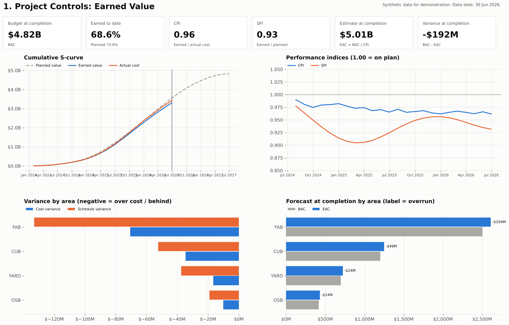
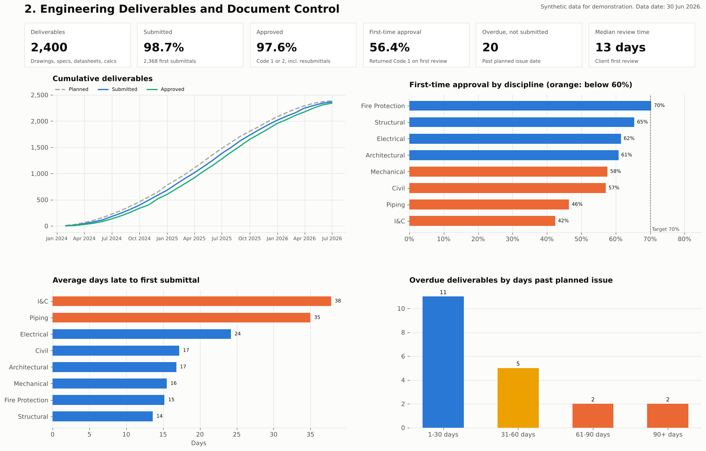
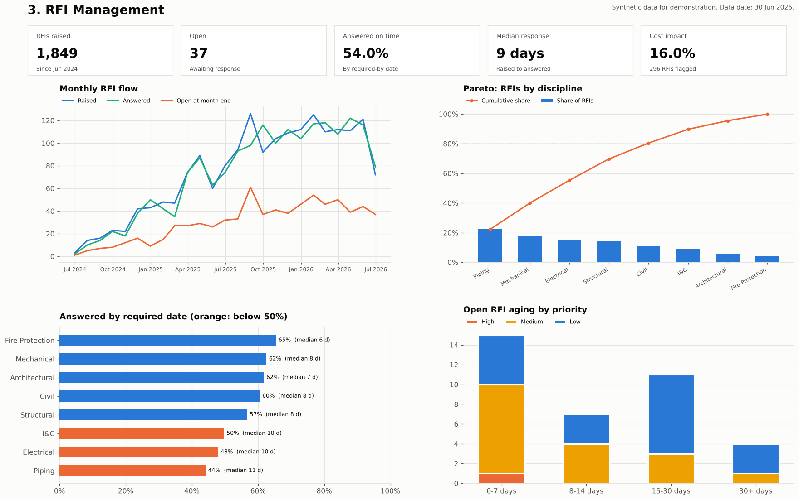
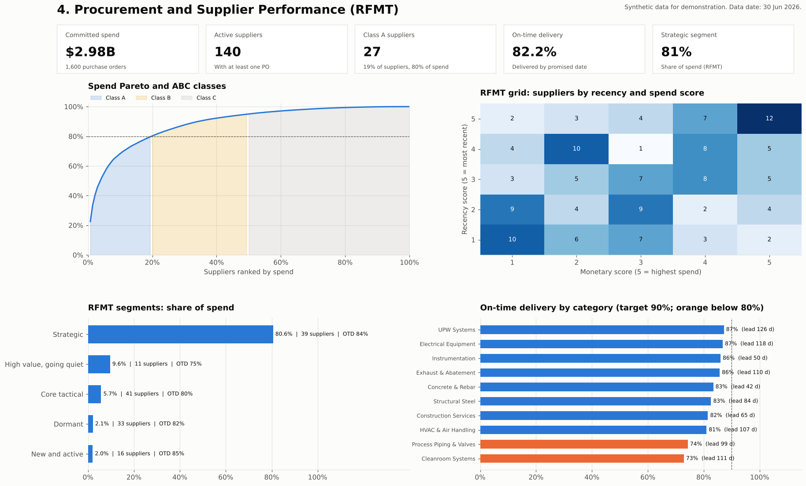
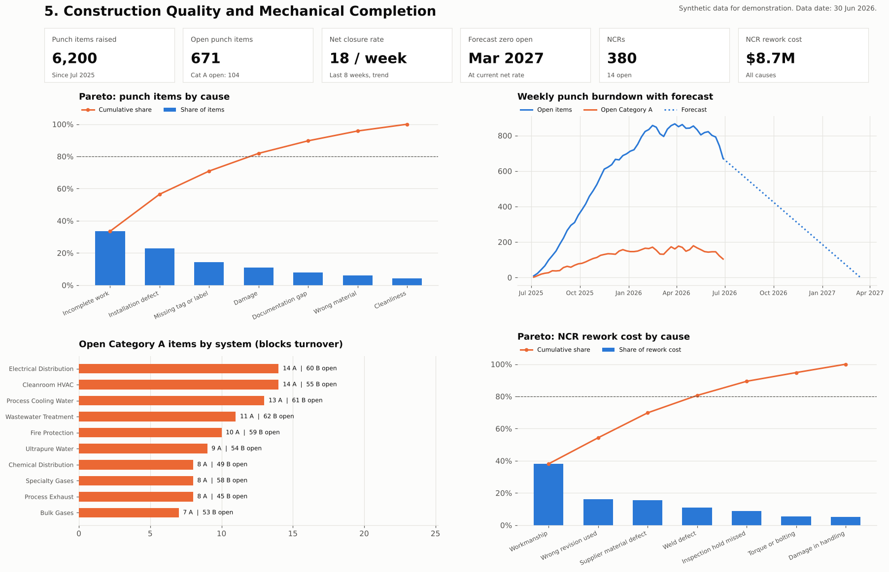

Earned value, S-curve, CPI/SPI, EAC

Deliverable progress, first-time approval, overdue

Flow, Pareto, response performance, aging

Spend Pareto, ABC, RFMT segments, on-time delivery

Punch Pareto, burndown forecast, Category A, NCRs